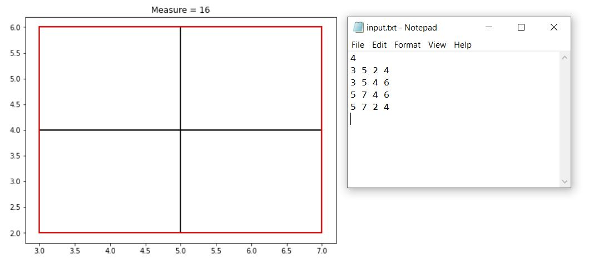
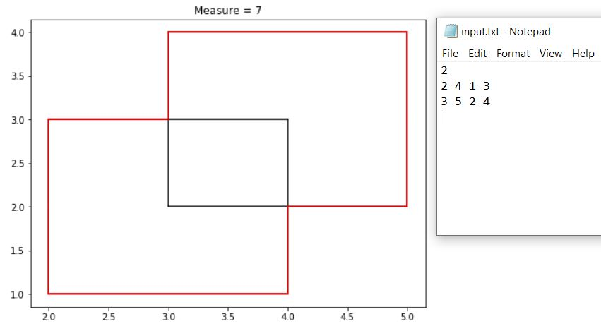
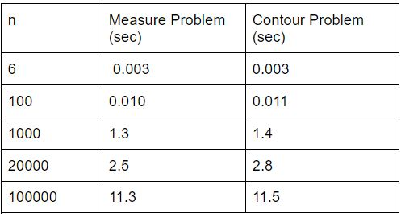

Design and Analysis of Algorithm Assignment 1
BY
Akshit (2018A7PS0187H)
Hritik Singh Kushwah (2018A7PS0323H)
Shubham Asopa (2018A7PS0101H)
Smiket Barodia (2018A7PS0231H)
Finding Measure and Contour of n iso-rectangle using Divide and Conquer strategy
Introduction
For this assignment, we try to find N iso-rectangles's measure and contour. Earlier, these problems were solved using line-sweep algorithms with higher time complexities ( O(nlogn) for measure and O(nlogn + plog(2n^2/p)) for Contour). In this assignment, we use the divide and conquer strategy proposed by Ralf Hartmut Guting to find more optimal solution.As both the problems deal with the union of rectangles, we solve this problem using an abstract data structure called STRIPE , which uses divide and conquer with 'separational representation'.
We have created two files iso_M.cpp which solves the measure problem and iso_Contour.cpp which solves contour problem.
There are two extra header files "geo.h" and "helper.h" whose explanation given in doxygen. Visuzalisation is done using python matplotlib library with code implemented in 'Visualization.ipynb'.
General Discussion on the Algorithm
Both problems can be solved by creating abstract data structure STRIPES. We first find frame which encloses all rectangles and
and get all vertical edges of all rectangles. We then generate Stripes using recursive divide and conquer strategy.
Stripe implementation although looks same but have different implementation for different problem.
For both problem we assume the x union which is disjoint x interval intersecting with n rectangles calculated differently.
Stripe Algorithm can be divided into 4 Parts
- Copy() = Makes finer partition for left and right side stripes. TC = O(n) / TC =O(nlogn) when set is used
- Blacken() = If For Sleft There exists a Right edge which does no have it's partner in Sleft then it's partner must be in SRight.Hence the Right edge's xunion = x_interval
Similarly if Sright has a Left edge which does not have it's partner, then that stripeM must be blackened. TC = O(n) - Concat() : Concatenate two vector of Stripes. As both stripeM will have same partition of Y coordinates and sorted from Copy() method it can be done in 1 loop for all partitions .TC = O(n)
Explanation of Measure Problem
Measure problem focuses on finding the area of union of n rectangles. We choose a predefined frame f which encloses all rectangles and create stripe for that frame. Each stripe consists of x_union which is in case of measure is the width of all disjoint x interval intersecting with n rectangles. Each stripe also has a definite y interval or height and we can find net area by summing intersecting area of all stripes. Using divide and conquer , time complexity is O(nlogn).
for all Stripes S: Sum( (measure(s . x_union)*(s.y_ interval.top - s.y_interval.bottom)))
Explanation of Contour Problem
Contour problem deals with finding set of countour cycles which are describes the boundary of union of all iso-rectangle.
Each stripe has x_union as a binary search tree which contain the intervals as its leaf having L,R denoting its sides.
We only find the horizontal edges in contour cycles by using data structure stripe. For every horizontal edge h we find appropriate stripe s which is not contain in its rectangle. For given stripe s and edge h we find free interval of h from s.x_union.
interval J= (h.x_interval)\intersect(h . x _ interval,union(s . x_ union);
We can solve this free sub-interval query for given range [x1,x2] using s.x_union BST finding x1 and x2 in O(logn) time and finding intersecting intervals p thus O(logn + p). Free Sub-interval constitute to horizontal edges of contour.
So total time complexity is O(nlogn + p) with p pieces in final counter pieces .
Handling multiple x and y coordinates
If there are multiple x coordinates issue comes during finding median to divide vertical edges into two. We may resolve this issue my placing left edge before a right edge having same x coordinate.
For multiple y coordinates issue comes during finding intersection of two lists of y intervals and finding those edges which have their own partner on same side. So to insure that same rectangle edges are removed we add an unique id number to given y interval which represents rectangle's number.
Issues in Coding
- For larger values n we are unable to visualize contours but only able to calculate measure and execution time of both algorithms and noted in time analysis section. This is due to high runtime by matplotlib in python to generate plots and Unable to distinguish different rectangles and contour in plot.
- Issues were there will finding free subinterval query. We used preorder traversal for finding the leaf nodes with x_union intervals. It can be done using 1-D range query tree but that increases the complexity of code.
- For finding vertical edges for contour for visualization we traverse all stripes and find all x_union intervals and use draw the vertical edges using x.top and x.bottom of each interval and y interval of each stripe.
- Issues regarding multiple x and y coordinates are handles appropriately as mentioned in above section.
Experimental Results
We have used smaller test cases for visualization and to ensure correctness of algorithm. For time analysis and robustness we've used Larger Test cases in next section.
Execution Time for smaller test case takes = 1 -3 milliseconds
Input 1
Input 2
Input 3

Input 4

Input 5

Timing Analysis
For generating stripe for each problem we can write the following recursive relation
T(n) = 2T(n/2) + O(n)
As n=1 base case do in constant time T(1) =O(1).
Hence by solving T(n) = O(nlogn)
For measure problem we use extra O(n) to find measure and For contour problem extra (nlogn +p)
Thus for measure = O(nlogn) and O(nlogn + p) for contour
NOTE: We have used data structure set in code for finding union of y projection which changes complexity to T(nlog^2n) because of logn insertion time which can be improve using a linked list and O(n) while merging.
Time analysis Table
Note: Values in seconds